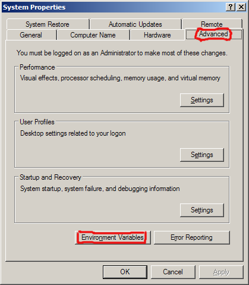

FreeGuide
FreeGuide| FreeGuide |
FAQ »
Setting The TZ Environment Variable |
|
|
Setting the TZ environment variableIf FreeGuide is completely wrong about the time, you want the Change Time Zone page. If FreeGuide is right about the time (clicking the Go to now button scrolls to the correct time), but your listings are showing programmes at the wrong time, it's probably because the XMLTV grabber you are using is confused about your time zone. You can fix this by setting the TZ environment variable. First you will need to find out the name of your time zone. This site might help: http://www.timezoneconverter.com/cgi-bin/findzone/findzone.tzc. Examples are "Europe/London", "US/Pacific", "Africa/Algiers". Now, setting the environment variable is different on different operating systems: Linux, FreeBSD, etc.Edit the file ".bashrc" in your home directory, and add a line like this:
(Except replace "Europe/Paris" with your time zone name.)
Now when you log out and log in again, and re-download your listings, they should have the correct time. If not, please Contact Us and we'll try to work out why not. Windows

Now when you restart FreeGuide, and re-download your listings, they should have the correct time. If not, please Contact Us and we'll try to work out why not. |
| If you would like to help improve this site, please Contact Us and we will give you the password to edit pages. | |
| Page last modified on June 10, 2008 PmWiki Info | - - - () - |